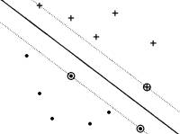
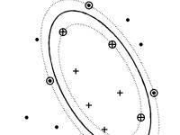
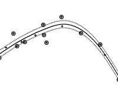
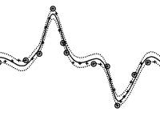

|  |  |  |  |
| Home |
| Support Vector Machines |
| SVM Reviews |
| SVM Books |
| SVM Software |
| Pattern Recognition |
| Optimum Hyperplane |
| SVM Regression |
| ν-SVM |
| SVM Statistics |
| Machine Learning |
| MLnet |
| NEuroNet |
| EvoNet |
| UCI Repository |
| List 1 |
| List 2 |
| List 3 |
| Wikipedia |
| Repository |
| ROCKIT |
| Weka |
| C4.5 |
| YALE |
| Tutorials |
Kernel-based techniques (such as support vector machines, Bayes point machines, kernel principal component analysis, and Gaussian processes) represent a major development in machine learning algorithms. Support vector machines (SVM) are a group of supervised learning methods that can be applied to classification or regression. Support vector machines represent an extension to nonlinear models of the generalized portrait algorithm developed by Vladimir Vapnik. The SVM algorithm is based on the statistical learning theory and the Vapnik-Chervonenkis (VC) dimension introduced by Vladimir Vapnik and Alexey Chervonenkis. |
| Search "SVM" in: |
| PubMed |
| PubMed Central |
| CiteSeer |
| Google Scholar |
| Scirus |
| BioChem Press |
| Search "Support Vector" in: |
| PubMed |
| PubMed Central |
| CiteSeer |
| Google Scholar |
| Scirus |
| BioChem Press |
| Journals |
| JMLR |
| IEJMD |
| Bioinformatics |
| Nucleic Acids Research |
| BioMed Central |
| Literature Databases |
| PubMed |
| PubMed Central |
| CiteSeer |
| Search Engines |
| DOAJ |
| Scirus |
| OJOSE |
| http://www.support-vector-machines.org/ |
| The "SVM - Support Vector Machines" Portal is part of the OIRI network |
| All rights reserved - Copyright © 2005 Ovidiu Ivanciuc |